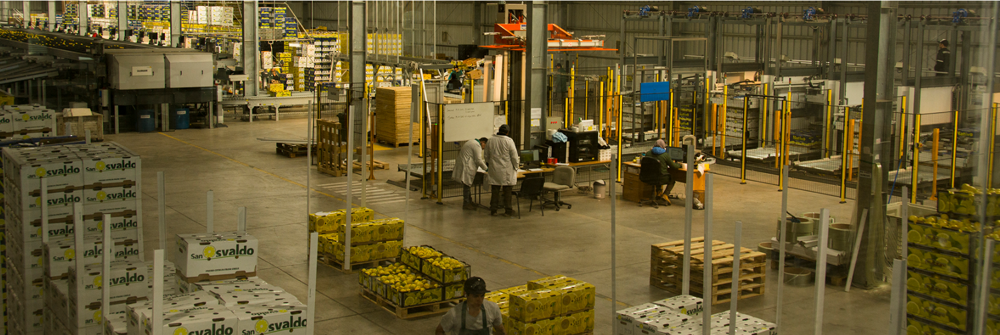
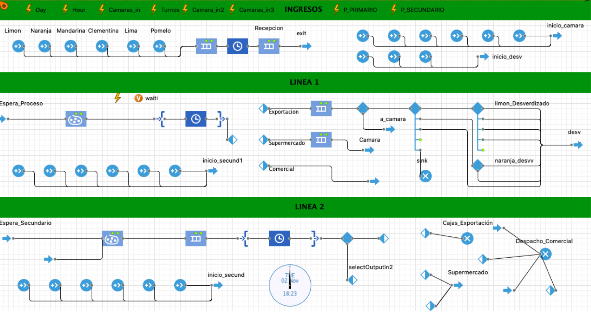
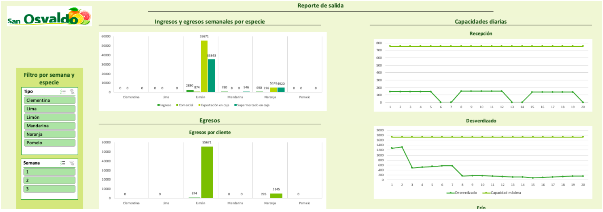

Overview
Agrícola San Osvaldo es una empresa dedicada a la cosecha, empaque y distribución de cítricos. Se fundó en el año 2009 y al día de hoy cuenta con seis fundos: San Osvaldo, Tambillo, Cruz de Cañas, El Peñón, San Agustín y Carretón. En estos se cosecha diversos tipos de cítricos, entre los cuales se encuentran: limones, naranjas, mandarinas entre otros.
La agrícola cuenta con el Vivero San Osvaldo, donde producen las plantas que utilizan en los fundos. Además cuenta con una planta de embalaje donde se procesan los cítricos y se exportan. Esta se ubica en Las Barrancas, en la región de Coquimbo.
Problema
La actual carencia de una planificación eficaz del inventario en la Agrícola San Osvaldo ha llevado a la empresa a enfrentar de manera reiterada la necesidad de contratar servicios de cámaras externas para el almacenamiento de su fruta. Este desafío surge como consecuencia directa de las limitaciones experimentadas internamente, ya que la capacidad de almacenamiento de la planta ha llegado a su límite debido a la considerable cantidad de fruta que ingresa en determinados periodos.
Solución
Generar un análisis del proceso de packing mediante la simulación de la planta de procesamiento de cítricos, para conocer el estado y capacidades para un control efectivo sobre el flujo de entrada y salida de productos en la cámara de frio de citricos, para una planificación más eficiente de los recursos y reducirá la dependencia de arriendos externos.
Resultados
La simulación de la planta de empaque de frutas se centra en obtener una comprensión detallada y precisa de los inventarios semanales de la planta. A través de la simulación, se logra un control efectivo sobre el flujo de entrada y salida de productos en la cámara, lo que permite una planificación más eficiente de los recursos y reducir la dependencia de arriendos externos. Este nivel de detalle en los inventarios semanales proporciona a la empresa una visión estratégica para optimizar la gestión de inventarios, anticipar las necesidades de almacenamiento y minimizar los costos.
